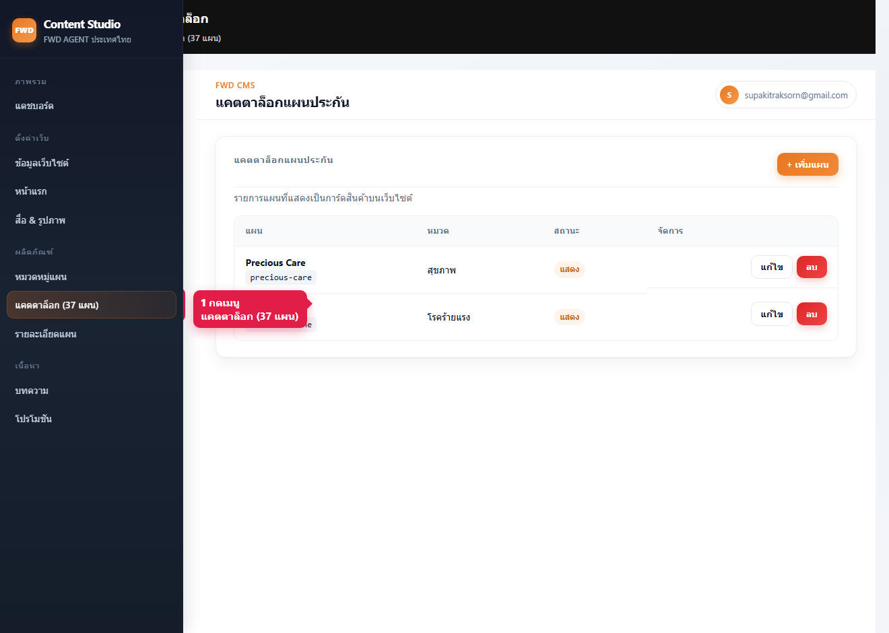
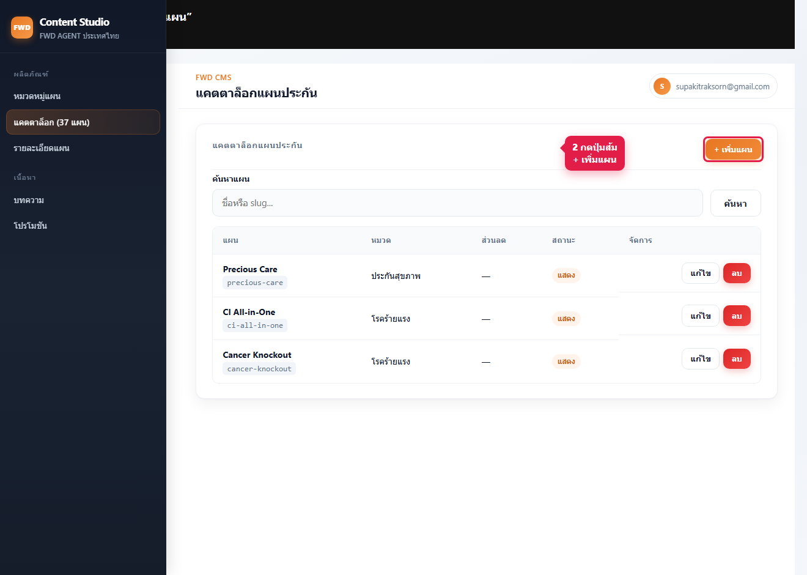
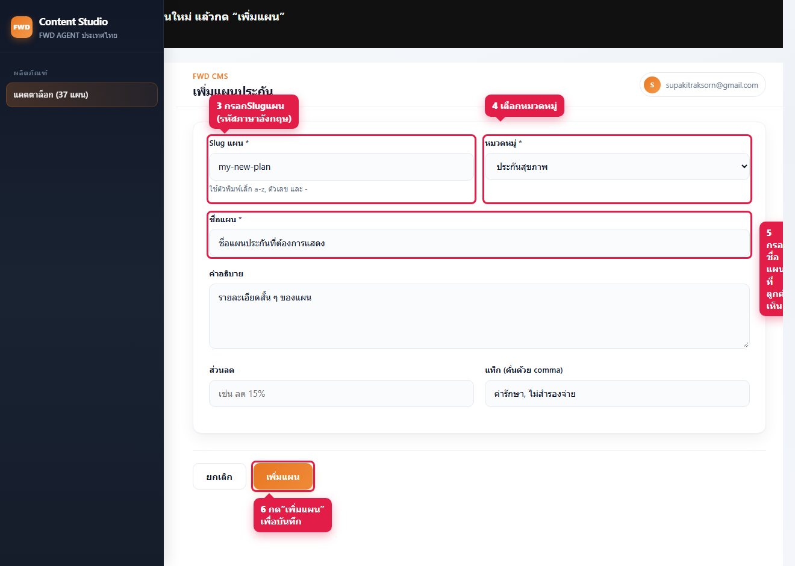
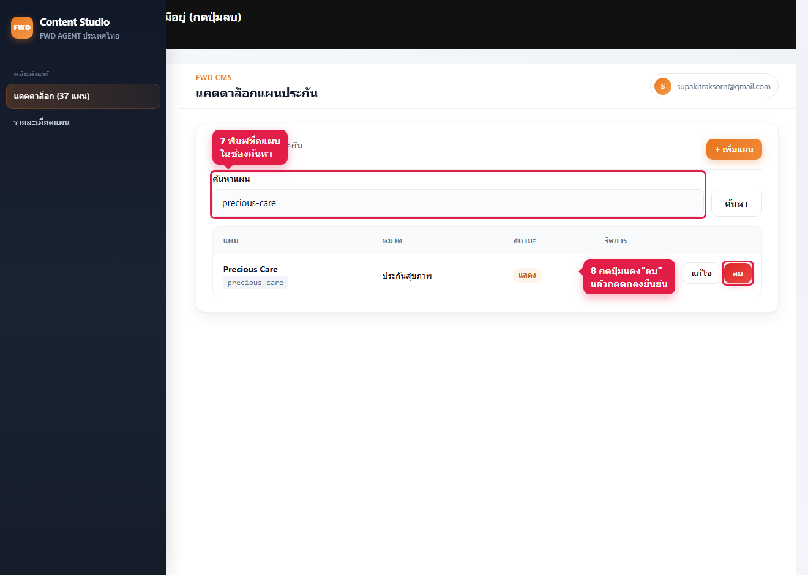
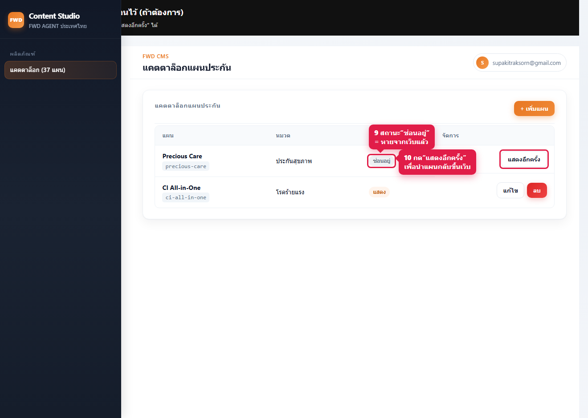

แบบเห็นหน้าจอระบบหลังบ้านจริง พร้อมกรอบแดงและหมายเลขชี้จุด — สไตล์เดียวกับคู่มือตัวอย่าง
ผลิตภัณฑ์ → แคตตาล็อก → + เพิ่มแผน → กรอกข้อมูล → บันทึก



https://fwdagentthailand.com/ ในหมวดที่เลือก แล้วรีเฟรช (Ctrl+F5)
ค้นหาแผน → กด “ลบ” → ยืนยัน · แผนเดิมกู้คืนด้วย “แสดงอีกครั้ง”

